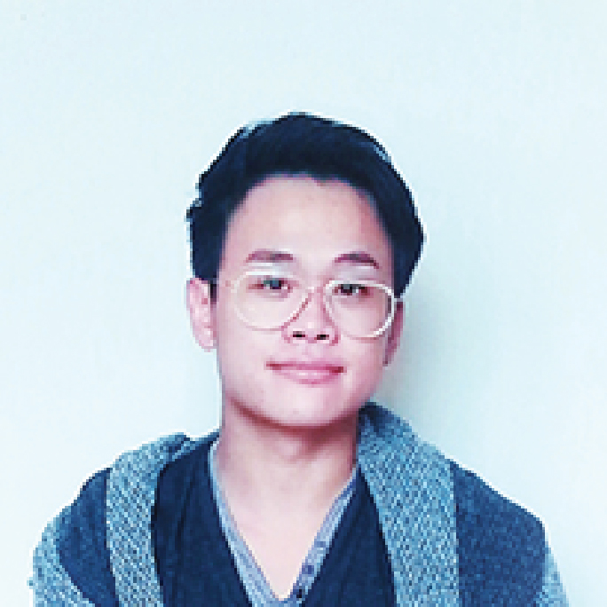
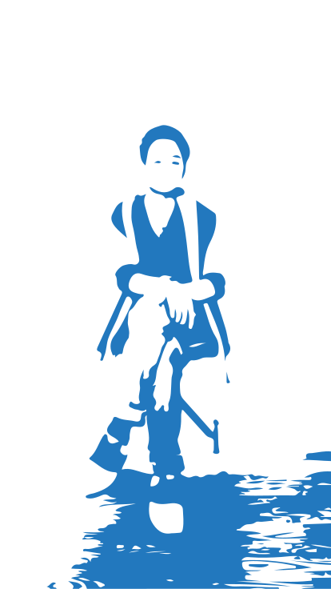

<div id="about-content" class="grid-8 centered">
	<h1>Jacky Giang</h1>
	<h2>Designer, Technologist</h2>
	<p>Inspired by technology. Ingrained in the faculties of architecture.</p>	
	<div id="timeline" class="grid-8 centered">
		<a id="resume-button" href="resources/documents/resume_jacky_giang.pdf" target="_blank">
			 
			<h2>Resume</h2>
		</a>
		<div class="runner">
		</div>
		
		<h2>Current</h2>
		<p>Master's student of Interaction Design at College for Creative Studies.</p>
		<div class="runner">
		</div>
		
		<h2>August 2012 to August 2014</h2>
		<p>Technology consultant for Ferndale Public Schools.</p>
		<div class="runner">
		</div>
		
		<h2>April 2012</h2>
		<p>B.S. in Architecture from TCAUP at University of Michigan.</p>
	</div>
</div>
